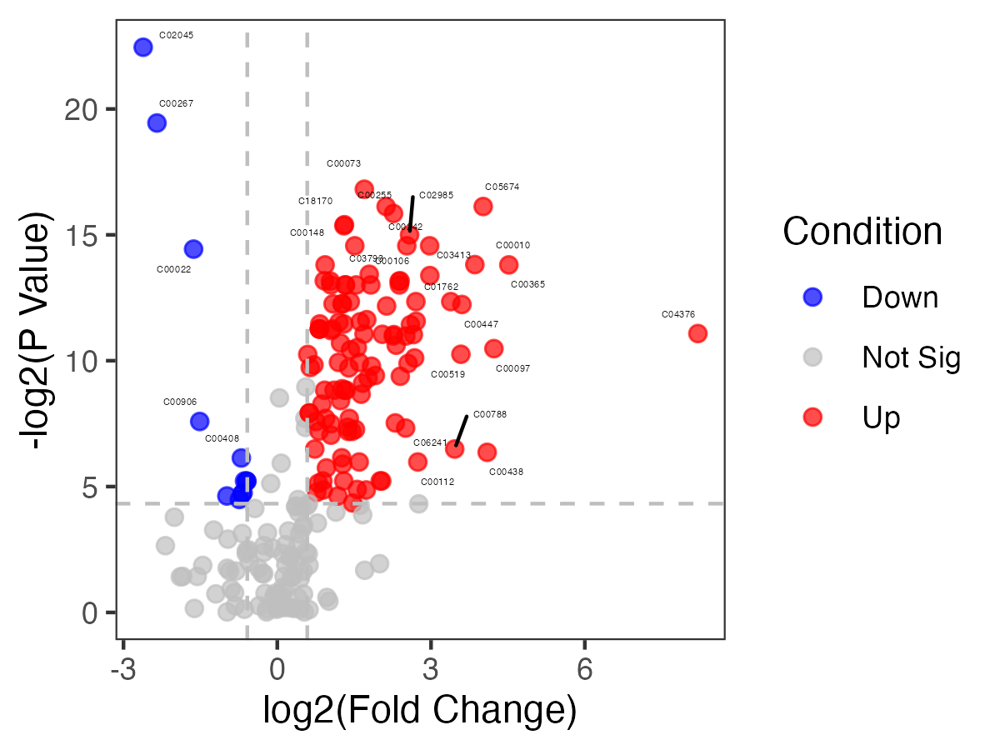
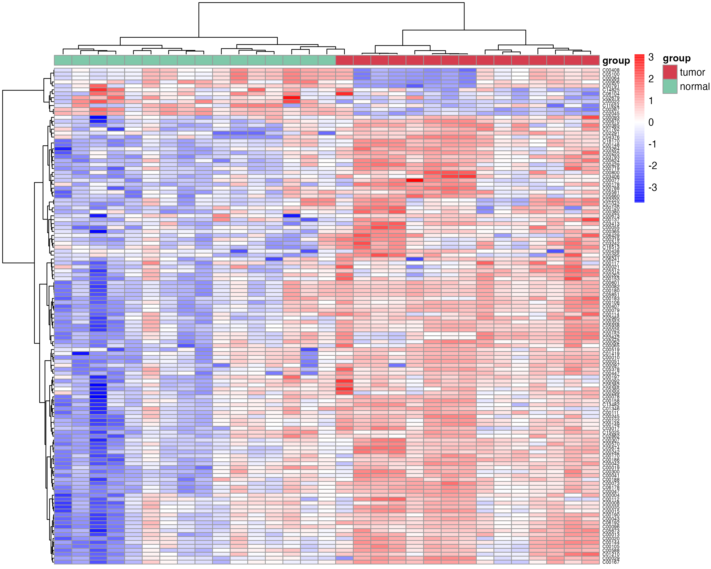

Chapter 4 Example-rountinely analyses
4.1 Metabolite name change
4.1.1 Metabolite name changed to refmet name
This step requires networking
RefMet: A Reference list of Metabolite names
The main objective of RefMet is to provide a standardized reference nomenclature for both discrete metabolite structures and metabolite species identified by spectroscopic techniques in metabolomics experiments.
compound_name <- c("2-Hydroxybutyric acid","1-Methyladenosine","tt","2-Aminooctanoic acid")
refmetid_result <- name2refmet(compound_name)
write.table(refmetid_result,"result/refmetid_result.txt",quote=F,sep="\t",row.names=F)4.1.2 Metabolite name changed to kegg id
This step requires networking
search the kegg id corresponding to the metabolites name
compound_name <- c("2-Hydroxybutyric acid","1-Methyladenosine","tt","2-Aminooctanoic acid")
keggid_result <- name2keggid(compound_name) %>%
tidyr::separate_rows(kegg_id,sep=";") %>%
tibble::as_tibble()
write.table(keggid_result,"result/keggid_result.txt",quote=F,sep="\t",row.names=F)4.1.3 Metabolite name corresponding to kegg pathway
This step requires networking
search the kegg pathway corresponding to the metabolite name
result_all <- name2pathway(compound_name)
##### the output is the each metabolite related pathway
result_name2pathway <- result_all$name2pathway
write.table(result_name2pathway,"result/keggpathway_result.txt",quote=F,sep="\t",row.names=F)4.2 Group-wise analyses
4.2.1 PCA plot
PCA of the data
### the pca plot
p_PCA <- pPCA(mexpr,group)
ggplot2::ggsave("result/1.PCA_1.png",p_PCA$p1)
ggplot2::ggsave("result/1.PCA_2.png",p_PCA$p2)
ggplot2::ggsave("result/1.PCA_3.png",p_PCA$p3)


4.2.2 Differnetial metabolite analysis
4.2.2.2 using the function DM in R packages “MNet”
diff_result <- DM(mexpr,group)
dev.off()
write.table(diff_result,"result/DM_result.txt",quote=F,row.names=F,sep="\t")
## filter the differential metabolites by default fold change >1.5 or < 1/1.5 ,fdr < 0.05 and VIP>1
diff_result_filter <- diff_result %>%
dplyr::filter(fold_change >1.3 | fold_change < 1/1.3) %>%
dplyr::filter(fdr_wilcox<0.1) %>%
dplyr::filter(vip>0.8)
utils::write.table(diff_result,"result/2.all_TumorvsNormal.txt",quote=F,row.names=F,sep="\t")
utils::write.table(diff_result_filter,"result/2.diff_TumorvsNormal.txt",quote=F,row.names=F,sep="\t")4.2.3 Differential metabolites’ volcano
the volcano plot of metabolites using the function “pVolcano” in the package “MNet”
p_volcano <- pVolcano(diff_result,foldchange=1.5)
#p_volcano
ggplot2::ggsave("result/3.volcano.pdf",p_volcano)
ggplot2::ggsave("result/3.volcano.png",p_volcano)
4.2.4 Differential metabolites’ heatmap
the heatmap plot of differentital metabolites using the function “pHeatmap” in R package “MNet”
mexpr_diff <- mexpr[rownames(mexpr) %in% diff_result_filter$name,]
p_heatmap <- pHeatmap(mexpr_diff,group,fontsize_row=5,fontsize_col=4,clustering_method="complete",clustering_distance_cols="euclidean")
ggplot2::ggsave("result/3.heatmap.png",p_heatmap,width=10,height=8)

4.3 Feature selection
4.3.1 Boruta
group <- rep("normal",length(names(mexpr)))
group[grep("TUMOR",names(mexpr))] <- "tumor"
mexpr1 <- t(mexpr) %>%
as.data.frame() %>%
dplyr::mutate(group=group)
result_ML_Boruta <- ML_Boruta(mexpr1)4.4 Pathway analysis
4.4.1 pathview only metabolite
dir.create("result/pathview/metabolite",recursive=T)
dir.create("result/pathview/metabolite_gene",recursive=T)
setwd("result/pathview/metabolite")
meta_name <- c("C00022","C00024","C00031","C00025","C00032")
meta_value <- c(1,2,-1,2,1)
names(meta_value) <- meta_name
gene_name <- c("B4GALT2","AGPAT3","FHIT")
gene_value <- c(3,0.5,-2)
names(gene_value) <- gene_name
pPathview(cpd.data=meta_value)

4.5 Time series analysis
4.6 Clinical analysis
4.6.1 Time series of clinical
time_series_ALT <- pCliTS(clinical_index,"ALT")
ggsave("result/clinical_time_series.png",time_series_ALT)4.6.2 Correlation between clinical and metabolites using mantel test
mexpr1 <- t(mexpr)
clinical_data <- as.data.frame(t(clinical))[,1:5]
metabolite_data <- as.data.frame(mexpr1)[1:28,]
p <- pCorCliMetMantel(clinical_data,metabolite_data)
ggsave("result/correlation_metabolites_clinical.pdf",p)
ggsave("result/correlation_metabolites_clinical.png",p)
4.6.3 Survival analysis
p <- survCli(clinical_survival)
png("result/survival_OS.png")
p$p_OS
dev.off()
png("result/survival_RFS.png")
p$p_RFS
dev.off()
png("result/survival_EFS.png")
p$p_EFS
dev.off()